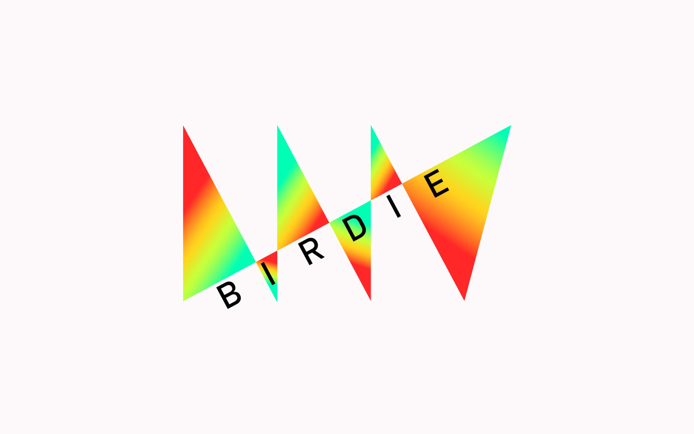
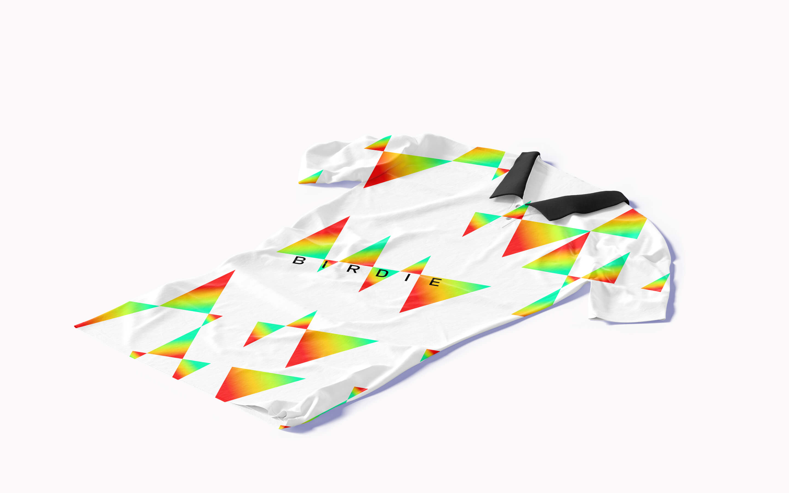
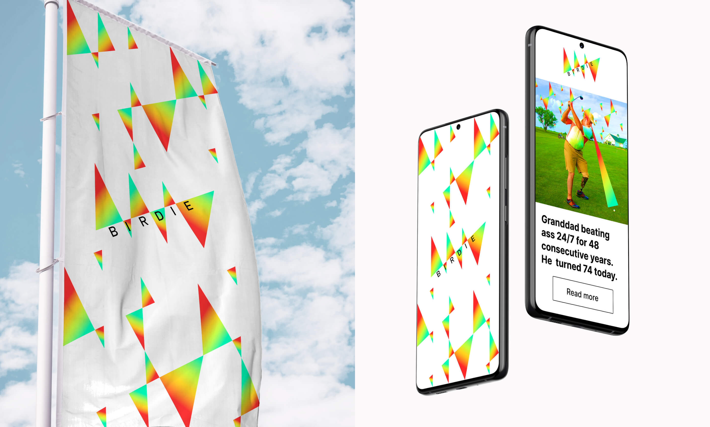

логотип английского онлайн журнала о гольфе Birdie
Empty
бунтарски сочный, современный, трендовый и задиристый. просто представь как ты берешь в руки журнал с этим логотипом. наверняка уже захотели пойти на грин и въебать свой первый хук?
логотип отображает путь гольфиста. он победоносно шествует и сдирает флаги с покоренных лунок. ему нужно захватить все, чтобы стать лучшим.


